# SpringBoot 简介
SpringBoot 是由 Pivotal 团队提供的全新框架，其设计目的是用来简化 Spring 应用的初始搭建以及开发过程。
使用了 Spring 框架后已经简化了我们的开发。而 SpringBoot 又是对 Spring 开发进行简化的，可想而知 SpringBoot 使用的简单及广泛性。既然 SpringBoot 是用来简化 Spring 开发的，那我们就先回顾一下，以 SpringMVC 开发为例：
- 创建工程，并在
pom.xml配置文件中配置所依赖的坐标
<dependencies> | |
<dependency> | |
<groupId>org.springframework</groupId> | |
<artifactId>spring-webmvc</artifactId> | |
<version>5.2.10.RELEASE</version> | |
</dependency> | |
<dependency> | |
<groupId>org.springframework</groupId> | |
<artifactId>spring-jdbc</artifactId> | |
<version>5.2.10.RELEASE</version> | |
</dependency> | |
<dependency> | |
<groupId>org.springframework</groupId> | |
<artifactId>spring-test</artifactId> | |
<version>5.2.10.RELEASE</version> | |
</dependency> | |
<dependency> | |
<groupId>org.mybatis</groupId> | |
<artifactId>mybatis</artifactId> | |
<version>3.5.6</version> | |
</dependency> | |
<dependency> | |
<groupId>org.mybatis</groupId> | |
<artifactId>mybatis-spring</artifactId> | |
<version>1.3.0</version> | |
</dependency> | |
<dependency> | |
<groupId>mysql</groupId> | |
<artifactId>mysql-connector-java</artifactId> | |
<version>5.1.46</version> | |
</dependency> | |
<dependency> | |
<groupId>com.alibaba</groupId> | |
<artifactId>druid</artifactId> | |
<version>1.1.16</version> | |
</dependency> | |
<dependency> | |
<groupId>junit</groupId> | |
<artifactId>junit</artifactId> | |
<version>4.12</version> | |
<scope>test</scope> | |
</dependency> | |
<dependency> | |
<groupId>javax.servlet</groupId> | |
<artifactId>javax.servlet-api</artifactId> | |
<version>3.1.0</version> | |
<scope>provided</scope> | |
</dependency> | |
<dependency> | |
<groupId>com.fasterxml.jackson.core</groupId> | |
<artifactId>jackson-databind</artifactId> | |
<version>2.9.0</version> | |
</dependency> | |
</dependencies> |
- 编写
web3.0的配置类
作为web程序，web3.0的配置类不能缺少，而这个配置类还是比较麻烦的，代码如下
public class ServletContainersInitConfig extends AbstractAnnotationConfigDispatcherServletInitializer { | |
protected Class<?>[] getRootConfigClasses() { | |
return new Class[]{SpringConfig.class}; | |
} | |
protected Class<?>[] getServletConfigClasses() { | |
return new Class[]{SpringMvcConfig.class}; | |
} | |
protected String[] getServletMappings() { | |
return new String[]{"/"}; | |
} | |
@Override | |
protected Filter[] getServletFilters() { | |
CharacterEncodingFilter filter = new CharacterEncodingFilter(); | |
filter.setEncoding("utf-8"); | |
return new Filter[]{filter}; | |
} | |
} |
- 编写
SpringMVC的配置类
@Configuration | |
@ComponentScan("com.blog.controller") | |
@EnableWebMvc | |
public class SpringMvcConfig implements WebMvcConfigurer { | |
} |
做到这只是将工程的架子搭起来。要想被外界访问，最起码还需要提供一个 Controller 类，在该类中提供一个方法。
- 编写
Controller类
@RestController | |
@RequestMapping("/books") | |
public class BookController { | |
@Autowired | |
private BookService bookService; | |
@PostMapping | |
public boolean save(@RequestBody Book book) { | |
return bookService.save(book); | |
} | |
@PutMapping | |
public boolean update(@RequestBody Book book) { | |
return bookService.update(book); | |
} | |
@DeleteMapping("/{id}") | |
public boolean delete(@PathVariable Integer id) { | |
return bookService.delete(id); | |
} | |
@GetMapping("/{id}") | |
public Book getById(@PathVariable Integer id) { | |
return bookService.getById(id); | |
} | |
@GetMapping | |
public List<Book> getAll() { | |
return bookService.getAll(); | |
} | |
} |
从上面的 SpringMVC 程序开发可以看到，前三步都是在搭建环境，而且这三步基本都是固定的。 SpringBoot 就是对这三步进行简化了。接下来我们通过一个入门案例来体现 SpingBoot 简化 Spring 开发。
# SpringBoot 入门案例
# 开发步骤
SpringBoot 开发起来特别简单，分为如下几步：
- 创建新模块，选择 Spring 初始化，并配置模块相关基础信息
- 选择当前模块需要使用的技术集
- 开发控制器类
- 运行自动生成的 Application 类
# 创建新模块
- 在 IDEA 下创建一个新模块，选择 Spring Initializr，用来创建 SpringBoot 工程
以前我们选择的是Maven，今天选择Spring Initializr来快速构建SpringBoot工程。而在Module SDK这一项选择我们安装的JDK版本。
- 对
SpringBoot工程进行相关的设置
我们使用这种方式构建的SpringBoot工程其实也是Maven工程，而该方式只是一种快速构建的方式而已。注意：打包方式这里需要设置为
Jar
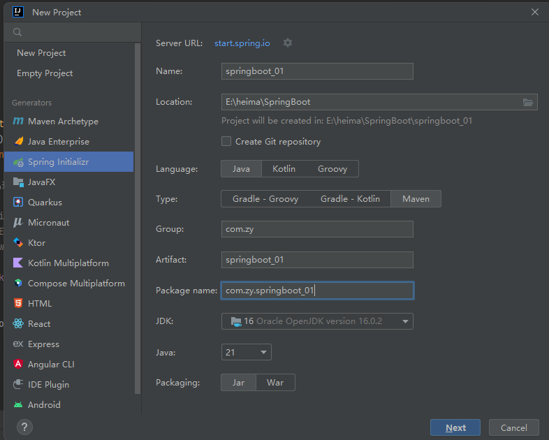 - 选中
Web，然后勾选Spring Web
最后点击创建，就大功告成了，经过以上步骤后就创建了如下结构的模块，它会帮我们自动生成一个Application类，而该类一会再启动服务器时会用到
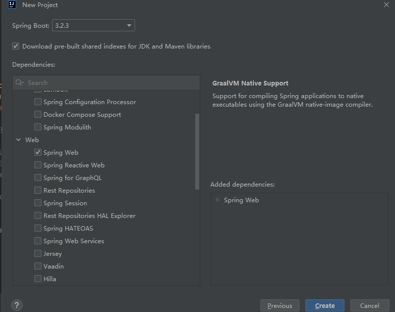
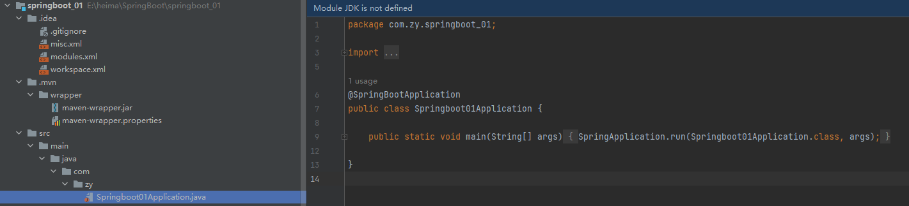
跑的时候又遇到了 JDK 版本问题，但 xml 有改配置，应该是 Spring Boot的版本和Java版本不兼容 的问题，查了一下 Spring Boot 3.0.4支持的最低Java 版本为JDK 17 ，应选择更低的版本即可
参考
# 创建 Controller
在 com.zy.controller 包下创建 BookController ，代码如下：
@RestController | |
@RequestMapping("/books") | |
public class BookController { | |
@GetMapping("/{id}") | |
public String getById(@PathVariable Integer id){ | |
System.out.println("id ==> "+id); | |
return "hello , spring boot!"; | |
} | |
} |
# 启动服务器
运行 SpringBoot 工程不需要使用本地的 Tomcat 和 插件，只运行项目 com.zy 包下的 Application 类，我们就可以在控制台看出如下信息
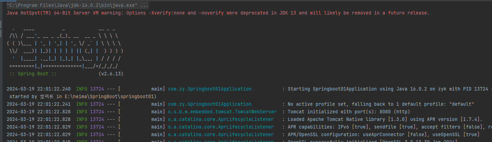
# 进行测试
依旧是使用 PostMan 来测试，发送 GET 请求访问 localhost:8080/books/123
可以看到响应回来的结果 hello,spring boot!
同时控制台也输出了 get id ==> 123
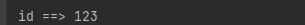
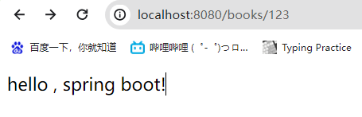
通过上面的入门案例我们可以看到使用 SpringBoot 进行开发，使整个开发变得很简单，那它是如何做到的呢？
要研究这个问题，我们需要看看 Application 类和 pom.xml 都书写了什么。先看看 Applicaion 类，该类内容如下：
@SpringBootApplication | |
public class Application { | |
public static void main(String[] args) { | |
SpringApplication.run(Application.class, args); | |
} | |
} |
这个类中的东西很简单，就在类上添加了一个 @SpringBootApplication 注解，而在主方法中就一行代码。我们在启动服务器时就是执行的该类中的主方法。
再看看 pom.xml 配置文件中的内容
<?xml version="1.0" encoding="UTF-8"?> | |
<project xmlns="http://maven.apache.org/POM/4.0.0" xmlns:xsi="http://www.w3.org/2001/XMLSchema-instance" | |
xsi:schemaLocation="http://maven.apache.org/POM/4.0.0 https://maven.apache.org/xsd/maven-4.0.0.xsd"> | |
<modelVersion>4.0.0</modelVersion> | |
<groupId>com.zy</groupId> | |
<artifactId>springboot01</artifactId> | |
<version>0.0.1-SNAPSHOT</version> | |
<name>springboot01</name> | |
<description>springboot01</description> | |
<!-- 指定了一个父工程，父工程中的东西在该工程中可以继承过来使用 --> | |
<parent> | |
<groupId>org.springframework.boot</groupId> | |
<artifactId>spring-boot-starter-parent</artifactId> | |
<version>2.5.0</version> | |
</parent> | |
<!--JDK 的版本 --> | |
<properties> | |
<java.version>1.8</java.version> | |
<project.build.sourceEncoding>UTF-8</project.build.sourceEncoding> | |
<project.reporting.outputEncoding>UTF-8</project.reporting.outputEncoding> | |
<spring-boot.version>2.6.13</spring-boot.version> | |
</properties> | |
<dependencies> | |
<!-- 该依赖就是我们在创建 SpringBoot 工程勾选的那个 Spring Web 产生的 --> | |
<dependency> | |
<groupId>org.springframework.boot</groupId> | |
<artifactId>spring-boot-starter-web</artifactId> | |
</dependency> | |
<!-- 这个是单元测试的依赖，我们现在没有进行单元测试，所以这个依赖现在可以没有 --> | |
<dependency> | |
<groupId>org.springframework.boot</groupId> | |
<artifactId>spring-boot-starter-test</artifactId> | |
<scope>test</scope> | |
</dependency> | |
</dependencies> | |
<dependencyManagement> | |
<dependencies> | |
<dependency> | |
<groupId>org.springframework.boot</groupId> | |
<artifactId>spring-boot-dependencies</artifactId> | |
<version>${spring-boot.version}</version> | |
<type>pom</type> | |
<scope>import</scope> | |
</dependency> | |
</dependencies> | |
</dependencyManagement> | |
<build> | |
<plugins> | |
<plugin> | |
<groupId>org.apache.maven.plugins</groupId> | |
<artifactId>maven-compiler-plugin</artifactId> | |
<version>3.8.1</version> | |
<configuration> | |
<source>1.8</source> | |
<target>1.8</target> | |
<encoding>UTF-8</encoding> | |
</configuration> | |
</plugin> | |
<plugin> | |
<groupId>org.springframework.boot</groupId> | |
<artifactId>spring-boot-maven-plugin</artifactId> | |
<version>${spring-boot.version}</version> | |
<configuration> | |
<mainClass>com.zy.Springboot01Application</mainClass> | |
<skip>true</skip> | |
</configuration> | |
<executions> | |
<execution> | |
<id>repackage</id> | |
<goals> | |
<goal>repackage</goal> | |
</goals> | |
</execution> | |
</executions> | |
</plugin> | |
<!-- 这个插件是在打包时需要的，而这里暂时还没有用到 --> | |
<plugin> | |
<groupId>org.springframework.boot</groupId> | |
<artifactId>spring-boot-maven-plugin</artifactId> | |
</plugin> | |
</plugins> | |
</build> | |
</project> |
我们代码之所以能简化，就是因为指定的父工程和 Spring Web 依赖实现的。具体的我们后面在聊。
# 对比
做完 SpringBoot 的入门案例后，接下来对比一下 Spring 程序和 SpringBoot 程序
| 类 / 配置文件 | Spring | SpringBoot |
|---|---|---|
| pom 文件中的坐标 | 手工添加 | 勾选添加 |
| web3.e 配置类 | 手工制作 | 无 |
| Spring/SpringMVC 配置类 | 手工制作 | 无 |
| 控制器 | 手工制作 | 手工制作 |
坐标
Spring程序中的坐标需要自己编写，而且坐标非常多SpringBoot程序中的坐标是我们在创建工程时进行勾选自动生成的web3.0 配置类
Spring程序需要自己编写这个配置类。这个配置类大家之前编写过，肯定感觉很复杂SpringBoot程序不需要我们自己书写配置类
Spring/SpringMVC程序的配置类需要自己书写。而SpringBoot程序则不需要书写。
注意：基于 Idea 的
Spring Initializr快速构建SpringBoot工程时需要联网。
# 官网构建工程
在入门案例中之所以能快速构建 SpringBoot 工程，是因为 Idea 使用了官网提供了快速构建 SpringBoot 工程的组件实现的。
首先进入 SpringBoot 官网 https://spring.io/projects/spring-boot ，拉到页面最下方，会有一个 Quickstart your project
然后点击 Spring Initializr 超链接，就会跳转到如下页面，构建工程的步骤与我们在 IDEA 中几乎没什么区别
点击 GENERATE ，就可以生成工程并下载到本地了，打开下载好的压缩包，可以看到工程的内容与 IDEA 生成的一模一样。
通过上面官网的操作，我们知道 Idea 中快速构建 SpringBoot 工程其实就是使用的官网的快速构建组件，那以后即使没有 Idea 也可以使用官网的方式构建 SpringBoot 工程。
# SpringBoot 工程快速启动
# 问题导入
以后我们和前端开发人员协同开发，而前端开发人员需要测试前端程序就需要后端开启服务器，这就受制于后端开发人员。为了摆脱这个受制，前端开发人员尝试着在自己电脑上安装 Tomcat 和 Idea ，在自己电脑上启动后端程序，这显然不现实
我们后端可以将 SpringBoot 工程打成 jar 包，该 jar 包运行不依赖于 Tomcat 和 Idea 这些工具也可以正常运行，只是这个 jar 包在运行过程中连接和我们自己程序相同的 Mysql 数据库即可。这样就可以解决这个问题
# 打包
由于我们在构建 SpringBoot 工程时已经在 pom.xml 中配置了如下插件
<plugin> | |
<groupId>org.springframework.boot</groupId> | |
<artifactId>spring-boot-maven-plugin</artifactId> | |
</plugin> |
所以我们只需要使用 Maven 的 package 指令打包就会在 target 目录下生成对应的 Jar 包。
注意：该插件必须配置，不然打好的
jar包也是有问题的
# 启动
进入 jar 包所在位置 (/target)，在 命令提示符 中输入如下命令
java -jar <artifactId>-<version>.jar |
执行上述命令就可以看到 SpringBoot 运行的日志信息
遇到 springboot01-0.0.1-SNAPSHOT.jar中没有主清单属性 的问题，因为之前 springboot 设置的默认源挂了魔法也没连上，换了阿里云的，阿里云配置中有以下配置，其中 skip 默认为 true 会导致虽然指定了 main 类但是打包的时候默认跳过了，改为 false 解决
<configuration> | |
<mainClass>com.zy.Springboot01Application</mainClass> | |
<skip>false</skip> | |
</configuration> |
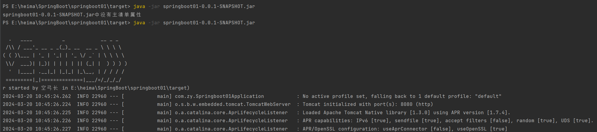
此时无论浏览器还是使用 PostMan 发送 GET 请求访问 localhost:8080/books/123 ，也可以正常输出 get id ==> 123
# SpringBoot 概述
SpringBoot 是由 Pivotal 团队提供的全新框架，其设计目的是用来简化 Spring 应用的初始搭建以及开发过程。
大家已经感受了 SpringBoot 程序，回过头看看 SpringBoot 主要作用是什么，就是简化 Spring 的搭建过程和开发过程。
原始 Spring 环境搭建和开发存在以下问题：
- 配置繁琐
- 依赖设置繁琐
SpringBoot 程序优点恰巧就是针对 Spring 的缺点
- 自动配置。这个是用来解决
Spring程序配置繁琐的问题 - 起步依赖。这个是用来解决
Spring程序依赖设置繁琐的问题 - 辅助功能（内置服务器，...）。我们在启动
SpringBoot程序时既没有使用本地的tomcat也没有使用tomcat插件，而是使用SpringBoot内置的服务器。
接下来我们来说一下 SpringBoot 的起步依赖
# 起步依赖
我们使用 Spring Initializr 方式创建的 Maven 工程的的 pom.xml 配置文件中自动生成了很多包含 starter 的依赖
<parent> | |
<groupId>org.springframework.boot</groupId> | |
<artifactId>spring-boot-starter-parent</artifactId> | |
<version>2.7.4</version> | |
<relativePath/> | |
</parent> | |
<dependency> | |
<groupId>org.springframework.boot</groupId> | |
<artifactId>spring-boot-starter-web</artifactId> | |
</dependency> | |
<dependency> | |
<groupId>org.springframework.boot</groupId> | |
<artifactId>spring-boot-starter-test</artifactId> | |
<scope>test</scope> | |
</dependency> |
这些依赖就是启动依赖，接下来我们探究一下他是如何实现的。
# 探索父工程
从上面的文件中可以看到指定了一个父工程 (阿里云的配置本身没有，自己加的，匹配下对应的版本)，我们进入到父工程，发现父工程中又指定了一个父工程，如下图所示
<parent> | |
<groupId>org.springframework.boot</groupId> | |
<artifactId>spring-boot-dependencies</artifactId> | |
<version>2.7.4</version> | |
</parent> |
再进入到该父工程中，在该工程中我们可以看到配置内容结构如下图所示
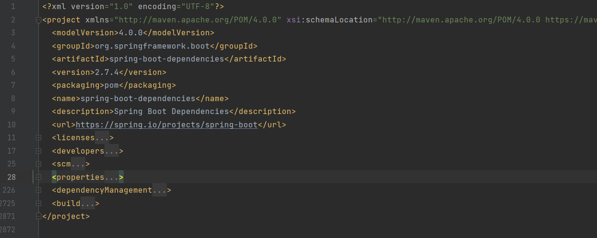
上图中的 properties 标签中定义了各个技术软件依赖的版本，避免了我们在使用不同软件技术时考虑版本的兼容问题。在 properties 中我们找 servlet 和 mysql 的版本如下
<servlet-api.version>4.0.1</servlet-api.version> | |
<mysql.version>8.0.30</mysql.version> |
dependencyManagement 标签是进行依赖版本锁定，但是并没有导入对应的依赖；如果我们工程需要那个依赖只需要引入依赖的 groupid 和 artifactId 不需要定义 version 。
而 build 标签中也对插件的版本进行了锁定，如下
<build> | |
<pluginManagement> | |
<plugins> | |
<plugin> | |
<groupId>org.codehaus.mojo</groupId> | |
<artifactId>build-helper-maven-plugin</artifactId> | |
<version>${build-helper-maven-plugin.version}</version> | |
</plugin> | |
<plugin> | |
<groupId>org.flywaydb</groupId> | |
<artifactId>flyway-maven-plugin</artifactId> | |
<version>${flyway.version}</version> | |
</plugin> | |
<plugin> | |
<groupId>pl.project13.maven</groupId> | |
<artifactId>git-commit-id-plugin</artifactId> | |
<version>${git-commit-id-plugin.version}</version> | |
</plugin> | |
<plugin> | |
<groupId>org.apache.johnzon</groupId> | |
<artifactId>johnzon-maven-plugin</artifactId> | |
<version>${johnzon.version}</version> | |
</plugin> | |
.... |
看完了父工程中 pom.xml 的配置后不难理解我们工程的的依赖为什么都没有配置 version 。
# 探索依赖
在我们创建的工程中的 pom.xml 中配置了如下依赖
<dependency> | |
<groupId>org.springframework.boot</groupId> | |
<artifactId>spring-boot-starter-web</artifactId> | |
</dependency> |
进入到该依赖，查看 pom.xml 的依赖会发现它引入了如下的依赖
<dependency> | |
<groupId>org.springframework.boot</groupId> | |
<artifactId>spring-boot-starter-tomcat</artifactId> | |
<version>2.6.13</version> | |
<scope>compile</scope> | |
</dependency> | |
<dependency> | |
<groupId>org.springframework</groupId> | |
<artifactId>spring-web</artifactId> | |
<version>5.3.23</version> | |
<scope>compile</scope> | |
</dependency> | |
<dependency> | |
<groupId>org.springframework</groupId> | |
<artifactId>spring-webmvc</artifactId> | |
<version>5.3.23</version> | |
<scope>compile</scope> | |
</dependency> | |
</dependencies> |
里面的引入了 spring-web 和 spring-webmvc 的依赖，这就是为什么我们的工程中没有依赖这两个包还能正常使用 springMVC 中的注解的原因。
而依赖 spring-boot-starter-tomcat ，从名字基本能确认内部依赖了 tomcat ，所以我们的工程才能正常启动。
结论：以后需要使用技术，只需要引入该技术对应的起步依赖即可
# 小结
starter
SpringBoot中常见项目名称，定义了当前项目使用的所有项目坐标，以达到减少依赖配置的目的
parent
- 所有
SpringBoot项目要继承的项目，定义了若干个坐标版本号（依赖管理，而非依赖），以达到减少依赖冲突的目的
实际开发
使用任意坐标时，仅书写 GAV 中的 G 和 A，V 由 SpringBoot 提供
- G：groupid
- A：artifactId
- V：version
如发生坐标错误，再指定 version（要小心版本冲突）
# 程序启动
创建的每一个 SpringBoot 程序时都包含一个类似于下面的类，我们将这个类称作引导类
@SpringBootApplication | |
public class Springboot01Application { | |
public static void main(String[] args) { | |
SpringApplication.run(Springboot01Application.class, args); | |
} | |
} |
# 切换 web 服务器
现在我们启动工程使用的是 tomcat 服务器，那能不能不使用 tomcat 而使用 jetty 服务器， jetty 在我们 maven 高级时讲 maven 私服使用的服务器。而要切换 web 服务器就需要将默认的 tomcat 服务器给排除掉，怎么排除呢？使用 exclusion 标签
<dependency> | |
<groupId>org.springframework.boot</groupId> | |
<artifactId>spring-boot-starter-web</artifactId> | |
<exclusions> | |
<exclusion> | |
<artifactId>spring-boot-starter-tomcat</artifactId> | |
<groupId>org.springframework.boot</groupId> | |
</exclusion> | |
</exclusions> | |
</dependency> |
现在我们运行引导类可以吗？运行一下试试
程序直接停止了，为什么呢？那是因为排除了 tomcat 服务器，程序中就没有服务器了。所以此时不光要排除 tomcat 服务器，还要引入 jetty 服务器。在 pom.xml 中因为 jetty 的起步依赖
<dependency> | |
<groupId>org.springframework.boot</groupId> | |
<artifactId>spring-boot-starter-jetty</artifactId> | |
</dependency> |
接下来再次运行引导类，在日志信息中就可以看到使用的是 jetty 服务器
2024-03-20 11:19:13.647 INFO 2596 --- [ main] o.s.b.w.e.j.JettyServletWebServerFactory : Server initialized with port: 8080 | |
2024-03-20 11:19:13.651 INFO 2596 --- [ main] org.eclipse.jetty.server.Server : jetty-9.4.49.v20220914; built: 2022-09-14T01:07:36.601Z; git: 4231a3b2e4cb8548a412a789936d640a97b1aa0a; jvm 16.0.2+7-67 | |
2024-03-20 11:19:13.670 INFO 2596 --- [ main] o.e.j.s.h.ContextHandler.application : Initializing Spring embedded WebApplicationContext |
小结：
通过切换服务器，我们不难发现在使用 SpringBoot 换技术时只需要导入该技术的起步依赖即可
# 配置文件
# 配置文件格式
我们现在启动服务器默认的端口号是 8080 ，访问路径可以书写为
http:/books/1 |
在线上环境我们还是希望将端口号改为 80 ，这样在访问的时候就可以不写端口号了，如下
http://localhost/books/1
而 SpringBoot 程序如何修改呢？ SpringBoot 提供了多种属性配置方式
application.propertiesserver.port=80application.ymlserver:
port: 81
application.yamlserver:
port: 82
注意：
SpringBoot程序的配置文件名必须是application，只是后缀名不同而已。
# 不同配置文件演示
- application.properties 配置文件
现在需要进行配置，配合文件必须放在 resources 目录下，而该目录下有一个名为 application.properties 的配置文件，我们就可以在该配置文件中修改端口号，在该配置文件中书写 port ， Idea 就会提示，修改 port 为 80：
# 应用服务 WEB 访问端口 | |
server.port=80 |
启动服务，会在控制台打印出日志信息，从日志信息中可以看到绑定的端口号已经修改了
o.s.b.web.embedded.jetty.JettyWebServer : Jetty started on port(s) 80 (http/1.1) with context path '/' |
并且通过 http://localhost/books/123 访问即可
- application.yml 配置文件
删除 application.properties 配置文件中的内容。在 resources 下创建一个名为 application.yml 的配置文件，在该文件中书写端口号的配置项，格式如下：
server: | |
port: 81 |
注意： yml 在
:后，数据前一定要加空格
而在 yml 配置文件中也是有提示功能的，我们也可以在该文件中书写 port ，然后 idea 就会提示并书写成上面的格式
启动服务，可以在控制台看到绑定的端口号是 81
- application.yaml 配置文件
删除 application.yml 配置文件和 application.properties 配置文件内容，然后在 resources 下创建名为 application.yaml 的配置文件，配置内容和后缀名为 yml 的配置文件中的内容相同，只是使用了不同的后缀名而已
application.yaml 配置文件内容如下：
server: | |
port: 83 |
启动服务，在控制台可以看到绑定的端口号
# 三种配合文件的优先级
在三种配合文件中分别配置不同的端口号，启动服务查看绑定的端口号。用这种方式就可以看到哪个配置文件的优先级更高一些
application.properties 文件内容如下：
server.port=80 |
application.yml 文件内容如下：
server: | |
port: 81 |
application.yaml 文件内容如下：
server: | |
port: 82 |
启动服务，在控制台可以看到使用的端口号是 80 。说明 application.properties 的优先级最高
注释掉 application.properties 配置文件内容。再次启动服务，在控制台可以看到使用的端口号是 81 ，说明 application.yml 配置文件为第二优先级。
从上述的验证结果可以确定三种配置文件的优先级是：
application.properties > application.yml > application.yaml
SpringBoot核心配置文件名为application
SpringBoot内置属性过多，且所有属性集中在一起修改，在使用时，通过提示键 + 关键字修改属性
例如要设置日志的级别时，可以在配置文件中书写logging，就会提示出来。配置内容如下
# yaml 格式
上面讲了三种不同类型的配置文件，而 properties 类型的配合文件之前我们学习过，接下来我们重点学习 yaml 类型的配置文件。
YAML（YAML Ain't Markup Language），一种数据序列化格式 这种格式的配置文件在近些年已经占有主导地位，那么这种配置文件和前期使用的配置文件是有一些优势的，我们先看之前使用的配置文件。
最开始我们使用的是 xml ，格式如下：
<enterprise> | |
<name>itcast</name> | |
<age>16</age> | |
<tel>4006184000</tel> | |
</enterprise> |
而 properties 类型的配置文件如下
enterprise.name=itcast | |
enterprise.age=16 | |
enterprise.tel=4006184000 |
yaml 类型的配置文件内容如下
enterprise: | |
name: itcast | |
age: 16 | |
tel: 4006184000 |
优点：
- 容易阅读
yaml类型的配置文件比xml类型的配置文件更容易阅读，结构更加清晰 - 容易与脚本语言交互
- 以数据为核心，重数据轻格式
yaml更注重数据，而xml更注重格式
YAML 文件扩展名：
.yml(主流).yaml
上面两种后缀名都可以，以后使用更多的还是 yml 的。
# 语法规则
- 大小写敏感
- 属性层级关系使用多行描述，每行结尾使用冒号结束
- 使用缩进表示层级关系，同层级左侧对齐，只允许使用空格（不允许使用 Tab 键）
空格的个数并不重要，只要保证同层级的左侧对齐即可。 - 属性值前面添加空格（属性名与属性值之间使用冒号 + 空格作为分隔）
- # 表示注释
核心规则：数据前面要加空格与冒号隔开
数组数据在数据书写位置的下方使用减号 - 作为数据开始符号，每行书写一个数据，减号与数据间空格分隔，例如
enterprise: | |
name: itcast | |
age: 16 | |
tel: 4006184000 | |
subject: | |
- Java | |
- 前端 | |
- 大数据 |
# yaml 配置文件数据读取
# 环境准备
新创建一个 SpringBoot`
在 com.zy.controller 包写创建名为 BookController 的控制器，内容如下
@RestController | |
@RequestMapping("/books") | |
public class BookController { | |
@GetMapping("/{id}") | |
public String getById(@PathVariable Integer id){ | |
System.out.println("id ==> "+id); | |
return "hello , spring boot!"; | |
} | |
} |
在 com.zy.domain 包下创建一个名为 Enterprise 的实体类等会用来封装数据，内容如下
public class Enterprise { | |
private String name; | |
private int age; | |
private String tel; | |
private String[] subject; | |
//setter and getter | |
//toString | |
} |
在 resources 下创建一个名为 application.yml 的配置文件，里面配置了不同的数据，内容如下
lesson: SpringBoot | |
server: | |
port: 80 | |
enterprise: | |
name: itcast | |
age: 16 | |
tel: 4006184000 | |
subject: | |
- Java | |
- 前端 | |
- 大数据 |
# 读取配置数据
# 使用 @Value 注解
使用 @Value("表达式") 注解可以从配合文件中读取数据，注解中用于读取属性名引用方式是： ${一级属性名.二级属性名……}
我们可以在 BookController 中使用 @Value 注解读取配合文件数据，如下
@RestController | |
@RequestMapping("/books") | |
public class BookController { | |
@Value("${lesson}") | |
private String lesson; | |
@Value("${server.port}") | |
private Integer port; | |
@Value("${enterprise.subject[0]}") | |
private String subject_00; | |
@GetMapping("/{id}") | |
public String getById(@PathVariable Integer id){ | |
System.out.println(lesson); | |
System.out.println(port); | |
System.out.println(subject_00); | |
return "hello , spring boot!"; | |
} | |
} |
# Environment 对象
上面方式读取到的数据特别零散， SpringBoot 还可以使用 @Autowired 注解注入 Environment 对象的方式读取数据。这种方式 SpringBoot 会将配置文件中所有的数据封装到 Environment 对象中，如果需要使用哪个数据只需要通过调用 Environment 对象的 getProperty(String name) 方法获取。具体代码如下：
@RestController | |
@RequestMapping("/books") | |
public class BookController { | |
@Autowired | |
private Environment env; | |
@GetMapping("/{id}") | |
public String getById(@PathVariable Integer id){ | |
System.out.println(env.getProperty("lesson")); | |
System.out.println(env.getProperty("enterprise.name")); | |
System.out.println(env.getProperty("enterprise.subject[0]")); | |
return "hello , spring boot!"; | |
} | |
} |
这种方式，框架内容大量数据，而在开发中我们很少使用
# 自定义对象
SpringBoot 还提供了将配置文件中的数据封装到我们自定义的实体类对象中的方式。具体操作如下：
- 将实体类
bean的创建交给Spring管理。
在类上添加@Component注解 - 使用
@ConfigurationProperties注解表示加载配置文件
在该注解中也可以使用prefix属性指定只加载指定前缀的数据 - 在
BookController中进行注入
具体代码如下：
Enterprise 实体类内容如下：
@Component | |
@ConfigurationProperties(prefix = "enterprise") | |
public class Enterprise { | |
private String name; | |
private int age; | |
private String tel; | |
private String[] subject; | |
public String getName() { | |
return name; | |
} | |
public void setName(String name) { | |
this.name = name; | |
} | |
public int getAge() { | |
return age; | |
} | |
public void setAge(int age) { | |
this.age = age; | |
} | |
public String getTel() { | |
return tel; | |
} | |
public void setTel(String tel) { | |
this.tel = tel; | |
} | |
public String[] getSubject() { | |
return subject; | |
} | |
public void setSubject(String[] subject) { | |
this.subject = subject; | |
} | |
@Override | |
public String toString() { | |
return "Enterprise{" + | |
"name='" + name + '\'' + | |
", age=" + age + | |
", tel='" + tel + '\'' + | |
", subject=" + Arrays.toString(subject) + | |
'}'; | |
} | |
} |
BookController 内容如下：
@RestController | |
@RequestMapping("/books") | |
public class BookController { | |
@Autowired | |
private Enterprise enterprise; | |
@GetMapping("/{id}") | |
public String getById(@PathVariable Integer id){ | |
System.out.println(enterprise.getName()); | |
System.out.println(enterprise.getAge()); | |
System.out.println(enterprise.getSubject()); | |
System.out.println(enterprise.getTel()); | |
System.out.println(enterprise.getSubject()[0]); | |
return "hello , spring boot!"; | |
} | |
} |
使用第三种方式，在实体类上有 Spring Boot Configuration Annotation Processor not configured 警告提示，在 pom.xml 中添加如下依赖即可
<dependency> | |
<groupId>org.springframework.boot</groupId> | |
<artifactId>spring-boot-configuration-processor</artifactId> | |
<optional>true</optional> | |
</dependency> |
# 多环境配置
以后在工作中，对于开发环境、测试环境、生产环境的配置肯定都不相同，比如我们开发阶段会在自己的电脑上安装 mysql ，连接自己电脑上的 mysql 即可，但是项目开发完毕后要上线就需要该配置，将环境的配置改为线上环境的。
来回的修改配置会很麻烦，而 SpringBoot 给开发者提供了多环境的快捷配置，需要切换环境时只需要改一个配置即可。不同类型的配置文件多环境开发的配置都不相同，接下来对不同类型的配置文件进行说明
# yaml 文件
在 application.yml 中使用 --- 来分割不同的配置，内容如下
#开发 | |
spring: | |
profiles: dev #给开发环境起的名字 | |
server: | |
port: 80 | |
--- | |
#生产 | |
spring: | |
profiles: pro #给生产环境起的名字 | |
server: | |
port: 81 | |
--- | |
#测试 | |
spring: | |
profiles: test #给测试环境起的名字 | |
server: | |
port: 82 | |
--- |
上面配置中 spring.profiles 是用来给不同的配置起名字的。而如何告知 SpringBoot 使用哪段配置呢？可以使用如下配置来启用都一段配置
#设置启用的环境 | |
spring: | |
profiles: | |
active: dev #表示使用的是开发环境的配置 |
综上所述， application.yml 配置文件内容如下
#设置启用的环境 | |
spring: | |
profiles: | |
active: dev | |
--- | |
#开发 | |
spring: | |
profiles: dev | |
server: | |
port: 80 | |
--- | |
#生产 | |
spring: | |
profiles: pro | |
server: | |
port: 81 | |
--- | |
#测试 | |
spring: | |
profiles: test | |
server: | |
port: 82 | |
--- |
# properties 文件
properties 类型的配置文件配置多环境需要定义不同的配置文件
application-dev.properties是开发环境的配置文件。我们在该文件中配置端口号为80
server.port=80 |
application-test.properties是测试环境的配置文件。我们在该文件中配置端口号为81
server.port=81 |
application-pro.properties是生产环境的配置文件。我们在该文件中配置端口号为82
server.port=82 |
SpringBoot 只会默认加载名为 application.properties 的配置文件，所以需要在 application.properties 配置文件中设置启用哪个配置文件，配置如下:
spring.profiles.active=pro |
# 命令行启动参数设置
使用 SpringBoot 开发的程序以后都是打成 jar 包，通过 java -jar xxx.jar 的方式启动服务的。那么就存在一个问题，如何切换环境呢？因为配置文件打到的 jar 包中了。
我们知道 jar 包其实就是一个压缩包，可以解压缩，然后修改配置，最后再打成 jar 包就可以了。这种方式显然有点麻烦，而 SpringBoot 提供了在运行 jar 时设置开启指定的环境的方式，如下
java –jar xxx.jar –-spring.profiles.active=test |
那么这种方式能不能临时修改端口号呢？也是可以的，可以通过如下方式
java –jar xxx.jar –-server.port=88 |
当然也可以同时设置多个配置，比如即指定启用哪个环境配置，又临时指定端口，如下
java –jar springboot.jar –-server.port=88 –-spring.profiles.active=test |
命令行设置的端口号优先级高（也就是使用的是命令行设置的端口号），配置的优先级其实 SpringBoot 官网已经进行了说明，参见官方说明
如果使用了多种方式配合同一个配置项，优先级高的生效。
# 配置文件分类
有这样的场景，我们开发完毕后需要测试人员进行测试，由于测试环境和开发环境的很多配置都不相同，所以测试人员在运行我们的工程时需要临时修改很多配置，如下
java –jar springboot.jar –-spring.profiles.active=test --server.port=85 --server.servlet.context-path=/zy --server.tomcat.connection-timeout=-1 …… …… …… …… …… |
针对这种情况， SpringBoot 定义了配置文件不同的放置的位置；而放在不同位置的优先级时不同的。
SpringBoot 中 4 级配置文件放置位置：
- 1 级：classpath：application.yml
- 2 级：classpath：config/application.yml
- 3 级：file ：application.yml
- 4 级：file ：config/application.yml
级别越高优先级越高
# 分级验证
- 验证 1 级和 2 级的优先级
1 级就是 resource 目录下的application.yml，2 级是在 resource 目录下新建一个 config 文件，在其中新建application.yml
分别设置为
server: | |
port: 80/81 |
运行启动引导类，可以在控制台看到 Tomcat initialized with port(s): 81 (http)
通过这个结果可以得出类路径下的 config 下的配置文件优先于类路径下的配置文件。
- 验证 2 级和 4 级的优先级
先将工程打成一个 jar 包，进入到 jar 包的目录下，创建application.yml配置文件，而在该配合文件中将端口号设置为82
在jar包所在位置创建config文件夹，在该文件夹下创建application.yml配置文件，而在该配合文件中将端口号设置为83- 在
jar包所在位置创建config文件夹，在该文件夹下创建application.yml配置文件，而在该配合文件中将端口号设置为82 - 在命令行使用以下命令运行程序
- 在
运行后日志信息 Tomcat initialized with port(s): 83 (http) ，通过这个结果可以得出 file： config 下的配置文件优先于类路径下的配置文件。
SpringBoot 2.5.0 版本存在一个 bug，我们在使用这个版本时，需要在
jar所在位置的config目录下创建一个任意名称的文件夹
# SpringBoot 整合 junit
回顾 Spring 整合 junit
@RunWith(SpringJUnit4ClassRunner.class) | |
@ContextConfiguration(classes = SpringConfig.class) | |
public class UserServiceTest { | |
@Autowired | |
private BookService bookService; | |
@Test | |
public void testSave(){ | |
bookService.save(); | |
} | |
} |
使用 @RunWith 注解指定运行器，使用 @ContextConfiguration 注解来指定配置类或者配置文件。而 SpringBoot 整合 junit 特别简单，分为以下三步完成
- 在测试类上添加
SpringBootTest注解 - 使用
@Autowired注入要测试的资源 - 定义测试方法进行测试
# 环境准备
- 创建一个新的
SpringBoot工程
在 com.zy.service 包下创建 BookService 接口，内容如下
public interface BookService { | |
public void save(); | |
} |
在 com.zy.service.impl 包写创建一个 BookServiceImpl 类，使其实现 BookService 接口，内容如下
@Service | |
public class BookServiceImpl implements BookService { | |
@Override | |
public void save() { | |
System.out.println("book service is running ..."); | |
} | |
} |
# 编写测试类
在 test/java 下创建 com.zy 包，在该包下创建测试类，将 BookService 注入到该测试类中
@SpringBootTest | |
class Springboot07TestApplicationTests { | |
@Autowired | |
private BookService bookService; | |
@Test | |
public void save() { | |
bookService.save(); | |
} | |
} |
运行 save，控制台输出 book service is running …
注意：这里的引导类所在包必须是测试类所在包及其子包。
例如：
- 引导类所在包是
com.zy- 测试类所在包是
com.zy如果不满足这个要求的话，就需要在使用
@SpringBootTest注解时，使用classes属性指定引导类的字节码对象。如@SpringBootTest(classes = xxApplication.class)
# SpringBoot 整合 mybatis
# 回顾 Spring 整合 Mybatis
Spring 整合 Mybatis 需要定义很多配置类
SpringConfig配置类@Import导入JdbcConfig和MybatisConfig配置类
@Configuration | |
@ComponentScan("com.zy") | |
@PropertySource("jdbc.properties") | |
@Import({JdbcConfig.class, MyBatisConfig.class}) | |
public class SpringConfig { | |
} |
JdbcConfig配置类
public class JdbcConfig { | |
@Value("${jdbc.driver}") | |
private String driver; | |
@Value("${jdbc.url}") | |
private String url; | |
@Value("${jdbc.username}") | |
private String username; | |
@Value("${jdbc.password}") | |
private String password; | |
@Bean | |
public DataSource dataSource() { | |
DruidDataSource dataSource = new DruidDataSource(); | |
dataSource.setDriverClassName(driver); | |
dataSource.setUrl(url); | |
dataSource.setUsername(username); | |
dataSource.setPassword(password); | |
return dataSource; | |
} |
MybatisConfig配置类- 定义
SqlSessionFactoryBean - 定义映射配置
- 定义
public class MyBatisConfig { | |
// 定义 bean，SqlSessionFactoryBean，用于产生 SqlSessionFactory 对象 | |
@Bean | |
public SqlSessionFactoryBean sqlSessionFactory(DataSource dataSource) { | |
SqlSessionFactoryBean sqlSessionFactory = new SqlSessionFactoryBean(); | |
// 设置模型类的别名扫描 | |
sqlSessionFactory.setTypeAliasesPackage("com.zy.domain"); | |
// 设置数据源 | |
sqlSessionFactory.setDataSource(dataSource); | |
return sqlSessionFactory; | |
} | |
// 定义 bean，返回 MapperScannerConfigurer 对象 | |
@Bean | |
public MapperScannerConfigurer mapperScannerConfigurer() { | |
MapperScannerConfigurer msc = new MapperScannerConfigurer(); | |
msc.setBasePackage("com.zy.dao"); | |
return msc; | |
} | |
} |
# 使用 SpringBoot
- 创建一个新的模块 module
注意选择技术集的时候，要勾选MyBatis Framework和MySQL Driver（MyBatis、MySQL） - 在
com.zy.domain包下定义实体类
public class Book { | |
private Integer id; | |
private String type; | |
private String name; | |
private String description; | |
public Integer getId() { | |
return id; | |
} | |
public void setId(Integer id) { | |
this.id = id; | |
} | |
public String getType() { | |
return type; | |
} | |
public void setType(String type) { | |
this.type = type; | |
} | |
public String getName() { | |
return name; | |
} | |
public void setName(String name) { | |
this.name = name; | |
} | |
public String getDescription() { | |
return description; | |
} | |
public void setDescription(String description) { | |
this.description = description; | |
} | |
@Override | |
public String toString() { | |
return "Book{" + | |
"id=" + id + | |
", type='" + type + '\'' + | |
", name='" + name + '\'' + | |
", description='" + description + '\'' + | |
'}'; | |
} | |
} |
- 在
com.zy.dao包下定义BookDao接口
public interface BookDao { | |
@Select("select * from tbl_book where id = #{id}") | |
public Book getById(Integer id); | |
} |
- 定义测试类
在test/java下定义包com.zy，在该包下测试类，内容如下
@SpringBootTest | |
class Springboot08MybatisApplicationTests { | |
@Autowired | |
private BookDao bookDao; | |
@Test | |
void testGetById() { | |
Book book = bookDao.getById(1); | |
System.out.println(book); | |
} | |
} |
# 编写配置
代码中还没有指定连接哪儿个数据库，用户名是什么，密码是什么。所以这部分需要在 SpringBoot 的配置文件中进行配合。
在 application.yml 配置文件中配置如下内容，password 根据自己的数据库密码来
spring: | |
datasource: | |
driver-class-name: com.mysql.jdbc.Driver | |
url: jdbc:mysql://localhost:3306/ssm_db | |
username: root | |
password: 123456 |
# 测试
运行测试方法，我们会看到如下错误信息， No qualifying bean of type 'com.blog.dao.BookDao' ，没有类型为 “com.blog.dao.BookDao” 的限定 bean
原因是 Mybatis 会扫描接口并创建接口的代码对象交给 Spring 管理，但是 MyBatisConfig 中并没有告诉 Mybatis 哪个是 dao 接口
public MapperScannerConfigurer mapperScannerConfigurer() { | |
MapperScannerConfigurer msc = new MapperScannerConfigurer(); | |
msc.setBasePackage("com.zy.dao"); | |
return msc; | |
} |
而我们要解决这个问题需要在 BookDao 接口上使用 @Mapper ， BookDao 接口改进为
@Mapper | |
public interface BookDao { | |
@Select("select * from tbl_book where id = #{id}") | |
public Book getById(Integer id); | |
} |
SpringBoot版本低于 2.4.3 (不含)，Mysql 驱动版本大于 8.0 时，需要在 url 连接串中配置时区jdbc:mysql://localhost:3306/ssm_db?serverTimezone=UTC，或在 MySQL 数据库端配置时区解决此问题
# 使用 Druid 数据源
现在我们并没有指定数据源， SpringBoot 有默认的数据源，我们也可以指定使用 Druid 数据源，按照以下步骤实现
导入
Druid依赖<dependency><groupId>com.alibaba</groupId>
<artifactId>druid</artifactId>
<version>1.1.16</version>
</dependency>在
application.yml配置文件配置
可以通过spring.datasource.type来配置使用什么数据源。配置文件内容可以改进为spring:
datasource:
driver-class-name: com.mysql.cj.jdbc.Driver
url: jdbc:mysql://localhost:3306/ssm_db?serverTimezone=UTC
username: root
password: root
type: com.alibaba.druid.pool.DruidDataSource
# 整合案例
SpringBoot 到这就已经学习完毕，接下来我们将学习 SSM 时做的三大框架整合的案例用 SpringBoot 来实现一下。我们完成这个案例基本是将之前做的拷贝过来，修改成 SpringBoot 的即可
# 创建工程
创建 SpringBoot 工程，在创建工程时需要勾选 web 、 mysql 、 mybatis
由于我们工程中使用到了 Druid ，所以需要导入 Druid 的坐标
<dependency> | |
<groupId>com.alibaba</groupId> | |
<artifactId>druid</artifactId> | |
<version>1.1.16</version> | |
</dependency> |
# 代码拷贝
将 springmvc_11_page 工程中的 java 代码及测试代码连同包拷贝到当前工程
需要修改的内容如下：
Springmvc_11_page中config包下的是配置类，而SpringBoot工程不需要这些配置类，所以这些可以直接删除dao包下的接口上在拷贝到当前工程中需要在接口中添加@Mapper注解
@Mapper | |
public interface BookDao { | |
@Insert("insert into tbl_book values (null, #{type}, #{name}, #{description})") | |
int save(Book book); | |
@Update("update tbl_book set type=#{type}, `name`=#{name}, `description`=#{description} where id=#{id}") | |
int update(Book book); | |
@Delete("delete from tbl_book where id=#{id}") | |
int delete(Integer id); | |
@Select("select * from tbl_book where id=#{id}") | |
Book getById(Integer id); | |
@Select("select * from tbl_book") | |
List<Book> getAll(); | |
} |
BookServiceTest测试需要改成SpringBoot整合junit的
import com.zy.domain.Book; | |
import org.junit.jupiter.api.Test; | |
import org.springframework.beans.factory.annotation.Autowired; | |
import org.springframework.boot.test.context.SpringBootTest; | |
@SpringBootTest | |
public class BookServiceTest { | |
@Autowired | |
private BookService bookService; | |
@Test | |
public void testGetById() { | |
Book book = bookService.getById(1); | |
System.out.println(book); | |
} | |
@Test | |
public void testGetAll() { | |
for (Book book : bookService.getAll()) { | |
System.out.println(book); | |
} | |
} | |
} |
# 配置文件
在 application.yml 配置文件中需要配置如下内容
- 服务的端口号 80
- 连接数据库的信息 (jdbc 四要素：driver、url、username、password)
- 数据源
server: | |
port: 80 | |
spring: | |
datasource: | |
driver-class-name: com.mysql.cj.jdbc.Driver | |
driver: jdbc:mysql://localhost:3306/ssm_db #?servierTimezone=UTC | |
username: root | |
password: root | |
type: com.alibaba.druid.pool.DruidDataSource |
# 静态资源
在 SpringBoot 程序中是没有 webapp 目录的，那么在 SpringBoot 程序中静态资源需要放在什么位置呢？
静态资源需要放在 resources 下的 static 下，多配置一个初始页面自动跳转
<script> | |
document.location.href="/pages/books.html" | |
</script> |
至此，将之前的 ssm 整合，改为 springboot 的工作，就完成了
# 总结
# 流程分析
- 创建工程
- 创建一个 SpringBoot 工程
- 需要勾选
Spring Web，MyBatis Framework和MySQL Driver
- SpringBoot 整合
- 整合 MyBatis
- 添加 Druid 数据源依赖
- 编写数据库配置文件在
application.yml中，配置数据库连接四要素 - 对于 Dao 层的包扫描，使用
@Mapper注解
- 整合 Junit
- 使用
@SpringBootTest注解
- 使用
- 整合 MyBatis
- 功能模块
- 创建数据库和表
- 在
domain包根据数据表来创建对应的 pojo 模型类 - 在
Dao层 / 包完成数据库的增删改 - 在
Service层 / 包（Service 接口 + 实现类） - 编写
Controller层 / 包- 接收请求
@RequestMapping、@GetMapping、@PostMapping、@PutMapping、@DeleteMapping配合@PathVariable将方法参数名称和 url 中变量名绑定，同名 () 内可省略，别忘了@RestController（是@Controller和@ResponseBody两个注解的结合体。）才会处理请求 - 接收数据 简单类型、POJO 类型、嵌套 POJO 类型、数组类型、JSON 数据类型
@RequestParam@PathVariable@RequestBody
- 转发业务层
- 使用
@Autowired自动装配
- 使用
- 响应结果
@ResponseBody
- 接收请求
# 实现
过一遍，页面和内容依然用之前的 booklist
# 创建 springboot 项目和结构目录
idea 的 Spring Initializr 创建，勾选 Spring Web ， MyBatis Framework 和 MySQL Driver
创建对应结构包
com.zy.controller编写 Controller 类com.zy.dao存放的是 Dao 层的接口，注意要使用@Mapper注解com.zy.service存放的是 Service 层接口，com.zy.service.impl存放的是 Service 的实现类com.zy.domain存放的是 pojo 类resources/static存放静态资源 HTML，CSS，JS 等test/java存放测试类
# 编写配置
导入 Druid 的坐标，springboot 有自带的数据源，要加的话要带上 <version>，不然会去自带的找，但并没有，就会报错
<dependency> | |
<groupId>com.alibaba</groupId> | |
<artifactId>druid</artifactId> | |
<version>1.1.16</version> | |
</dependency> |
替换原本的 properties，yaml 更好看和写，配置文件中编写数据库连接四要素。jdbc 链接有问题的话可能是要加 ?serverTimezone=UTC
server: | |
port: 80 | |
spring: | |
datasource: | |
type: com.alibaba.druid.pool.DruidDataSource | |
driver-class-name: com.mysql.cj.jdbc.Driver | |
url: jdbc:mysql://localhost:3306/springboot_work | |
username: root | |
password: 123456 |
# 数据准备
别忘了开启 mysql 服务，还是推荐 DG 进行可视化，敲 sql 也方便
create database springboot_work character set utf8; | |
use springboot_work; | |
create table tbl_book | |
( | |
id int primary key auto_increment, | |
type varchar(20), | |
`name` varchar(50), | |
description varchar(255) | |
); | |
insert into `tbl_book`(`id`, `type`, `name`, `description`) | |
values (1, '计算机理论', 'Spring实战 第五版', 'Spring入门经典教程，深入理解Spring原理技术内幕'), | |
(2, '计算机理论', 'Spring 5核心原理与30个类手写实践', '十年沉淀之作，手写Spring精华思想'), | |
(3, '计算机理论', 'Spring 5设计模式', '深入Spring源码刨析Spring源码中蕴含的10大设计模式'), | |
(4, '计算机理论', 'Spring MVC+Mybatis开发从入门到项目实战', | |
'全方位解析面向Web应用的轻量级框架，带你成为Spring MVC开发高手'), | |
(5, '计算机理论', '轻量级Java Web企业应用实战', '源码级刨析Spring框架，适合已掌握Java基础的读者'), | |
(6, '计算机理论', 'Java核心技术 卷Ⅰ 基础知识(原书第11版)', | |
'Core Java第11版，Jolt大奖获奖作品，针对Java SE9、10、11全面更新'), | |
(7, '计算机理论', '深入理解Java虚拟机', '5个纬度全面刨析JVM,大厂面试知识点全覆盖'), | |
(8, '计算机理论', 'Java编程思想(第4版)', 'Java学习必读经典，殿堂级著作！赢得了全球程序员的广泛赞誉'), | |
(9, '计算机理论', '零基础学Java(全彩版)', '零基础自学编程的入门图书，由浅入深，详解Java语言的编程思想和核心技术'), | |
(10, '市场营销', '直播就这么做:主播高效沟通实战指南', '李子柒、李佳奇、薇娅成长为网红的秘密都在书中'), | |
(11, '市场营销', '直播销讲实战一本通', '和秋叶一起学系列网络营销书籍'), | |
(12, '市场营销', '直播带货:淘宝、天猫直播从新手到高手', '一本教你如何玩转直播的书，10堂课轻松实现带货月入3W+'); |
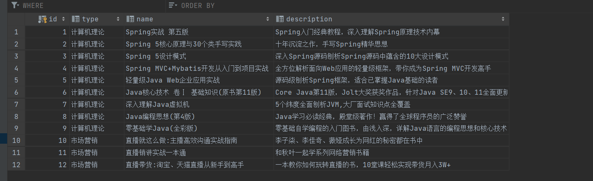
# 实现数据类
写好四个数据表的属性后，tost idea 自动补齐 toString 重写方法，Alt＋Insert 可以生成构造器 / Getter/Setter 等
package com.zy.domain; | |
public class Book { | |
private Integer id; | |
private String type; | |
private String name; | |
private String description; | |
public Integer getId() { | |
return id; | |
} | |
public void setId(Integer id) { | |
this.id = id; | |
} | |
public String getType() { | |
return type; | |
} | |
public void setType(String type) { | |
this.type = type; | |
} | |
public String getName() { | |
return name; | |
} | |
public void setName(String name) { | |
this.name = name; | |
} | |
public String getDescription() { | |
return description; | |
} | |
public void setDescription(String description) { | |
this.description = description; | |
} | |
@Override | |
public String toString() { | |
return "Book{" + | |
"id=" + id + | |
", type='" + type + '\'' + | |
", name='" + name + '\'' + | |
", description='" + description + '\'' + | |
'}'; | |
} | |
} |
# 实现 Dao 层
Dao 是数据访问层，Dao 的作用是封装对数据库的访问：增删改查，不涉及业务逻辑，只是达到按某个条件获得指定数据的要求。
package com.zy.dao; | |
import com.zy.domain.Book; | |
import org.apache.ibatis.annotations.*; | |
import java.util.List; | |
@Mapper | |
public interface BookDao { | |
@Select("select * from tbl_book where id=#{id}") | |
public Book getById(Integer id); | |
@Delete("delete from tbl_book where id=#{id}") | |
public void delete(Integer id); | |
@Insert("insert into tbl_book (type,name,description) values(#{type},#{name},#{description})") | |
public int save(Book book); | |
@Update("update tbl_book set type = #{type}, name = #{name}, description = #{description} where id = #{id}") | |
public int update(Book book); | |
@Select("select * from tbl_book") | |
public List<Book> getAll(); | |
} |
# 实现 service 层
业务逻辑层。顾名思义，它处理逻辑上的业务，而不去考虑具体的实现。要提供不同的数据库的服务时，我们只需要面对接口用不同的类实现即可，而不用重复地定义类。
因为在 java 中接口是多继承的，而类是单继承的，如果你需要一个类实现多个 service，你用接口可以实现，用类定义 service 就没那么灵活。
package com.zy.service; | |
import com.zy.domain.Book; | |
import java.util.List; | |
public interface BookService { | |
public Book getById(Integer id); | |
public boolean delete(Integer id); | |
public boolean save(Book book); | |
public boolean update(Book book); | |
public List<Book> getAll(); | |
} |
package com.zy.service.impl; | |
import com.zy.dao.BookDao; | |
import com.zy.domain.Book; | |
import com.zy.service.BookService; | |
import org.springframework.beans.factory.annotation.Autowired; | |
import org.springframework.stereotype.Service; | |
import java.util.List; | |
@Service | |
public class BookServiceImpl implements BookService { | |
@Autowired | |
private BookDao bookDao; | |
@Override | |
public boolean save(Book book) { | |
int cnt = bookDao.save(book); | |
return cnt > 0; | |
} | |
@Override | |
public boolean update(Book book) { | |
int cnt = bookDao.update(book); | |
return cnt>0; | |
} | |
@Override | |
public boolean delete(Integer id) { | |
return bookDao.delete(id) > 0; | |
} | |
@Override | |
public Book getById(Integer id) { | |
return bookDao.getById(id); | |
} | |
@Override | |
public List<Book> getAll() { | |
return bookDao.getAll(); | |
} | |
} |
# 实现 controller 层
从 HTTP 请求中获取信息，提取参数，并将其分发给不同的处理服务（service 层），并向前端返回 service 层处理后的数据（JSON 数据或者 ModelAndView 对象）
package com.zy.controller; | |
import com.zy.domain.Book; | |
import com.zy.service.BookService; | |
import org.springframework.beans.factory.annotation.Autowired; | |
import org.springframework.web.bind.annotation.*; | |
import java.util.List; | |
@RestController | |
@RequestMapping("/books") | |
public class BookController { | |
@Autowired | |
private BookService bookService; | |
@GetMapping("/{id}") | |
public Result getById(@PathVariable Integer id) { | |
Book book = bookService.getById(id); | |
Integer code = book != null ? Code.GET_OK : Code.GET_ERR; | |
String msg = book != null ? "" : "数据查询失败，请重试！"; | |
return new Result(code,book,msg); | |
} | |
@GetMapping | |
public Result getAll() { | |
List<Book> bookList = bookService.getAll(); | |
Integer code = bookList != null ? Code.GET_OK : Code.GET_ERR; | |
String msg = bookList != null ? "" : "数据查询失败，请重试！"; | |
return new Result(code,bookList,msg); | |
} | |
@PostMapping | |
public Result save(@RequestBody Book book) { | |
boolean flag = bookService.save(book); | |
return new Result(flag ? Code.SAVE_OK:Code.SAVE_ERR,flag); | |
} | |
@PutMapping | |
public Result update(@RequestBody Book book) { | |
boolean flag = bookService.update(book); | |
return new Result(flag ? Code.UPDATE_OK:Code.UPDATE_ERR,flag); | |
} | |
@DeleteMapping("/{id}") | |
public Result delete(@PathVariable Integer id) { | |
boolean flag = bookService.delete(id); | |
return new Result(flag ? Code.DELETE_OK:Code.DELETE_ERR,flag); | |
} | |
} |
还又对结果的封装，让业务规范，这块实际开发根据具体需求撰写
package com.zy.controller; | |
public class Code { | |
public static final Integer SAVE_OK = 20011; | |
public static final Integer DELETE_OK = 20021; | |
public static final Integer UPDATE_OK = 20031; | |
public static final Integer GET_OK = 20041; | |
public static final Integer SAVE_ERR = 20010; | |
public static final Integer DELETE_ERR = 20020; | |
public static final Integer UPDATE_ERR = 20030; | |
public static final Integer GET_ERR = 20040; | |
public static final Integer SYSTEM_ERR = 50001; | |
public static final Integer SYSTEM_TIMEOUT_ERR = 50002; | |
public static final Integer SYSTEM_UNKNOW_ERR = 59999; | |
public static final Integer BUSINESS_ERR = 60002; | |
} |
package com.zy.controller; | |
public class Result { | |
private Object data; | |
private Integer code; | |
private String msg; | |
public Result() { | |
} | |
public Result(Integer code, Object data) { | |
this.data = data; | |
this.code = code; | |
} | |
public Result(Integer code, Object data, String msg) { | |
this.data = data; | |
this.code = code; | |
this.msg = msg; | |
} | |
public Object getData() { | |
return data; | |
} | |
public void setData(Object data) { | |
this.data = data; | |
} | |
public Integer getCode() { | |
return code; | |
} | |
public void setCode(Integer code) { | |
this.code = code; | |
} | |
public String getMsg() { | |
return msg; | |
} | |
public void setMsg(String msg) { | |
this.msg = msg; | |
} | |
} |
# 异常处理
- 将异常进行分类
在 com.zy.exception 包下新建异常类
package com.zy.exception; | |
import com.zy.controller.Code; | |
import com.zy.exception.BusinessException; | |
import com.zy.exception.SystemException; | |
import com.zy.controller.Result; | |
import org.springframework.web.bind.annotation.ExceptionHandler; | |
import org.springframework.web.bind.annotation.RestControllerAdvice; | |
@RestControllerAdvice | |
public class ProjectExceptionAdvice { | |
// 处理系统异常 | |
@ExceptionHandler(SystemException.class) | |
public Result doSystemException(SystemException ex){ | |
// 记录日志 | |
// 发送消息给运维 | |
// 发送邮件给开发人员，ex 对象发送给开发人员 | |
return new Result(ex.getCode(),null,ex.getMessage()); | |
} | |
// 处理业务一场 | |
@ExceptionHandler(BusinessException.class) | |
public Result doBusinessException(BusinessException ex){ | |
return new Result(ex.getCode(),null,ex.getMessage()); | |
} | |
// 处理未知异常 | |
@ExceptionHandler(Exception.class) | |
public Result doOtherException(Exception ex){ | |
// 记录日志 | |
// 发送消息给运维 | |
// 发送邮件给开发人员，ex 对象发送给开发人员 | |
return new Result(Code.SYSTEM_UNKNOW_ERR,null,"系统繁忙，请稍后再试！"); | |
} | |
} |
package com.zy.exception; | |
public class BusinessException extends RuntimeException{ | |
private Integer code; | |
public Integer getCode() { | |
return code; | |
} | |
public void setCode(Integer code) { | |
this.code = code; | |
} | |
public BusinessException(Integer code, String message) { | |
super(message); | |
this.code = code; | |
} | |
public BusinessException(Integer code, String message, Throwable cause) { | |
super(message, cause); | |
this.code = code; | |
} | |
} |
package com.zy.exception; | |
public class SystemException extends RuntimeException{ | |
private Integer code; | |
public Integer getCode() { | |
return code; | |
} | |
public void setCode(Integer code) { | |
this.code = code; | |
} | |
public SystemException(Integer code, String message) { | |
super(message); | |
this.code = code; | |
} | |
public SystemException(Integer code, String message, Throwable cause) { | |
super(message, cause); | |
this.code = code; | |
} | |
} |
使用，在 controller 层需要的业务位置 throw new xxException()
# 测试
增删改查都 ok
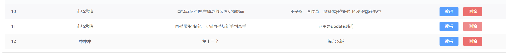
数据库的也更改了
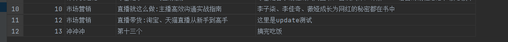
至此 sprintboot 大体流程初步掌握
# 业务逻辑
- 接收页面发送的 ajax 请求
- 类注释，拦截什么路径下的请求
@RestController、@RequestMapping("/") - 方法注释，上面的路径之后的路径
@PostMapping("/login")
- 类注释，拦截什么路径下的请求
- 方法的形参（
HttpServletRequest request, @RequestBody Employee employee）- 接收 request，并且表明接收的数据格式，@RequestBody 会自动按名称匹配上
- 写具体的业务逻辑
- Service 调用 Mapper 操作数据库，查询分页数据
- Controller 将查询到的分页数据响应给页面
- 页面接收到分页数据并通过 ElementUI 的 Table 组件展示到页面上